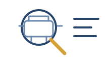
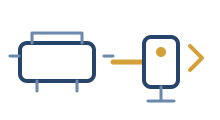
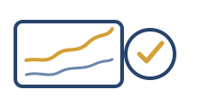

For suitable rotating assets where repeat measurement and trend add maintenance value.
Longer-term machine observation
Continuous condition monitoring for rotating machinery
Track vibration on critical rotating machinery and investigate changes that a single visit may miss. Fixed measurement points provide a consistent basis for trends, maintenance planning and diagnostic follow-up.
Monitoring from £75 per monitored asset per month · installation quoted separately
When trend matters
Use continuous monitoring when time adds diagnostic value
A one-off measurement answers what the machine is doing during the visit. Continuous monitoring becomes useful when the question is how the machine changes: after maintenance, across load, through an intermittent event or during deterioration.
EchoShift reviews vibration changes alongside operating and environmental conditions to establish what needs maintenance attention.
Starting costs
Monitoring from £75 per asset per month
Monitoring starts from £75 per monitored asset per month. Installation and commissioning are quoted separately to suit the sensors, mounting, cabling, power, communications and site access.
Installation is scoped around the machine, sensor arrangement, mounting method and site infrastructure before any work is agreed.
Scope agreed firstPrice confirmed before installationMulti-asset deployments quoted to suit the site
When to use it
Where continuous monitoring adds value
The strongest use cases are assets where condition can change between visits, operating state matters, or the consequence of failure justifies ongoing visibility.
Critical rotating assets
Machinery where an unexpected failure would create meaningful production, maintenance or safety consequences.
Intermittent problems
Symptoms that disappear before an engineer arrives and need to be captured during real operation.
Post-maintenance observation
Track whether vibration settles, returns or changes after bearing, alignment, coupling or other work.
Variable operating states
See how vibration evidence changes with load, speed or process condition instead of comparing unlike snapshots.
Bearing trend changes
Track relevant bearing-focused features over time from repeatable sensor positions and operating states.
Compare machine histories
Build comparable machine histories where deployment conditions are controlled enough for useful comparison.
Suitable machinery
Monitoring built around asset criticality and measurement quality
Motors and driven rotating machinery are the core deployment context, with installation planned around access, criticality, operating conditions and repeatable measurement points.
Electric motorsPumpsGearboxes & geared drivesMixers & agitatorsFans & blowersConveyorsView all rotating machinery →
Permanent or semi-permanent monitoring needs a repeatable mechanical interface. For high-quality bearing and trend evidence, EchoShift prefers a rigid engineered mounting point — typically a properly bonded metal pad or stud where the customer approves it — rather than relying on a temporary magnet indefinitely.
On-site process
From candidate asset to repeatable monitoring
A useful installation starts by defining the measurement positions, communications route and maintenance response before data collection begins.

Select the asset
Confirm the failure consequence, maintenance question, operating states and accessible measurement locations.

Establish the measurement path
Choose rigid sensor positions, mounting method, power/comms route and environmental/reference context.

Observe and baseline
Build a baseline across normal operating variation so later changes can be interpreted against real machine behaviour.
Review meaningful change
Review trends and diagnostic evidence, state the confidence in the findings and agree when further checks or maintenance are needed.
Diagnostic output
Trends, findings and maintenance follow-up
The installed system is intended to support maintenance prioritisation and diagnostic follow-up.
Repeatable measurement history
Comparable measurements from fixed machine locations over time.
Trend visibility
Changes in relevant vibration features rather than only isolated snapshots.
Diagnostic context
Evidence from the machine and surrounding/operating context used to interpret change.
Clear diagnostic confidence
Findings reported at the confidence supported by the machine evidence, with nuisance and operating effects separated where possible.
Escalation path
A defined route from monitored change to snapshot/re-measurement, inspection or maintenance.
Deployment review
For initial or pilot deployments, review what the monitoring added, how maintenance used the evidence and whether wider rollout is justified.
Local coverage
Industrial sites across the West Midlands
EchoShift provides on-site condition-monitoring support across Coventry, Birmingham, Wolverhampton, Tipton, the Black Country, Solihull and surrounding West Midlands manufacturing areas.
Questions
Condition monitoring FAQs
Practical questions about installation, monitoring and follow-up.
How much does continuous monitoring cost?
Monitoring starts from £75 per monitored asset per month. Installation and commissioning are quoted separately. We confirm the deployment scope and full price before work begins.
Should I start with a snapshot or continuous monitoring?
Start with a snapshot when one visit can answer the maintenance question. Continuous monitoring is more useful when the problem is intermittent, the asset is critical, or trend across operating states matters.
Is the installation permanent?
It can be semi-permanent or permanent depending on the deployment. Sensor mounting, cabling, controller location and customer requirements are agreed before installation.
What happens when monitoring shows a meaningful change?
The change is reviewed against the machine history and operating context, then translated into the most useful next action: inspection, re-measurement, planned maintenance or deeper diagnostic work.
Related services
Choose the level of investigation the machine needs
Need the machine watched over time?
Discuss monitoring for your machinery
Tell us which assets matter, what behaviour needs watching and what maintenance needs to know. We can scope an installation and commissioning around that requirement.